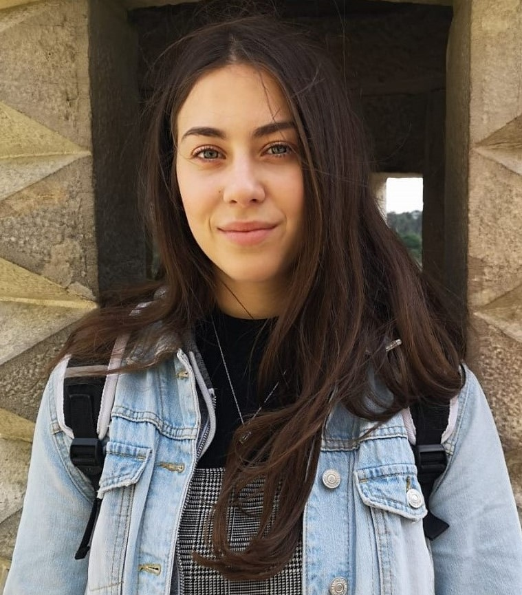

Über Mich
Erstmal, Wer bin ich? Ich bin jemand der ständig an sich arbeitet und noch seinen Weg in dieser Welt sucht. Eine Person die gerne Zeit für sich nimmt, niemals aufgibt, aber auch jemand der total durchdrehen kann (auf einer guten Weise) und gerne Zeit mit Ihren Freuden verbringt. Denn das Leben wäre ohne sie viel trauriger und einsamer. Ach übrigens, meine Name ist Larissa.
Meine Hobbies
Ist es Inliner fahren, Fußball oder Vikinger Schach spielen, reisen oder Serien bis zum umfallen anzuschauen, so lange ich Spaß habe und Momente mit meinen Freunden und meiner Familie teilen kann, ist für mich alles möglich/perfekt. Doch meine Lieblingstätigkeiten sind:
- Tanzen
- Gitarre spielen
- Lesen
- Schwimmen
- Kochen
- Yoga
Meine Hochschule
Die Hochschule Furtwangen, auch HFU genannt bietet verschiendene Studiengänge an.Von AGW, Informatik, Wirtschaftsingenuierwesen bis hin zu OnlineMedien. Alles ist dabei!!! Ich selber studiere OnlineMedien, ein Sudiengang der zu empfehlen ist.
Meine Lieblingsveranstaltungen
Meine Lieblingsveranstaltungen in einer Reihenfolge:
| Veranstaltungen | Rang |
|---|---|
| Marketing | 1 |
| UXD | 2 |
| Computergrafik & 3D-Mod. | 3 |
| AV-Produktion | 4 |